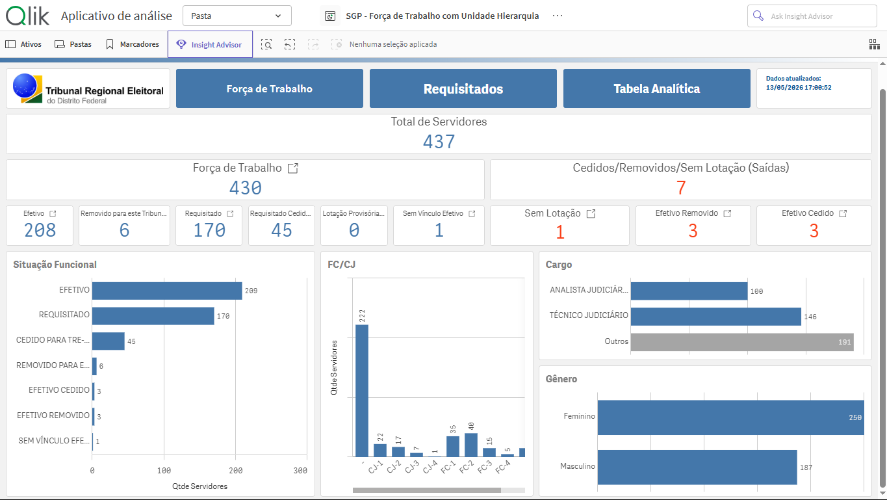
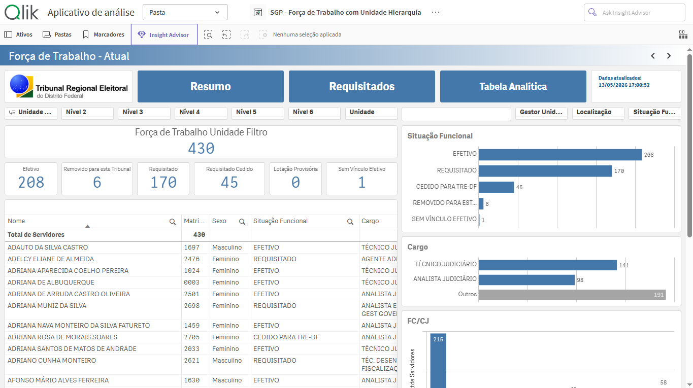
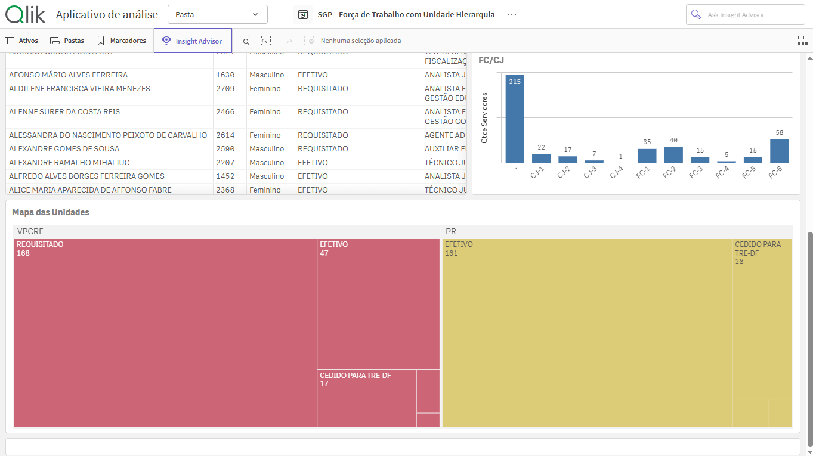
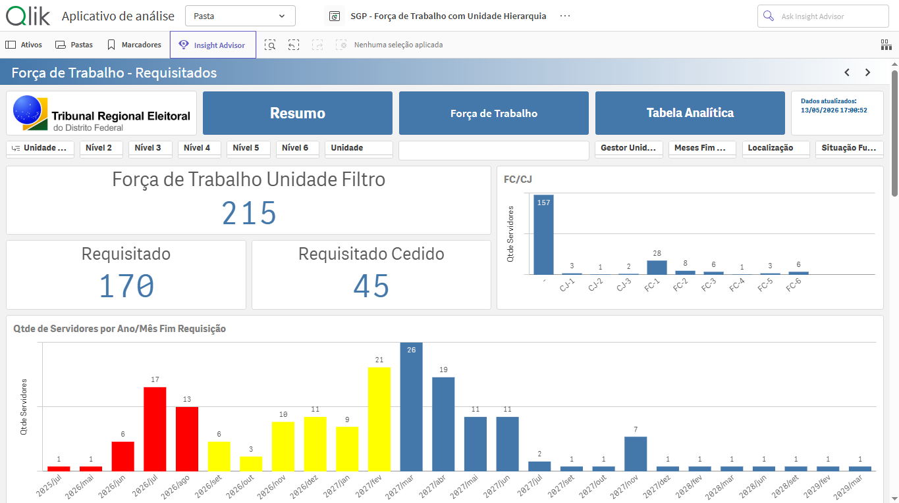
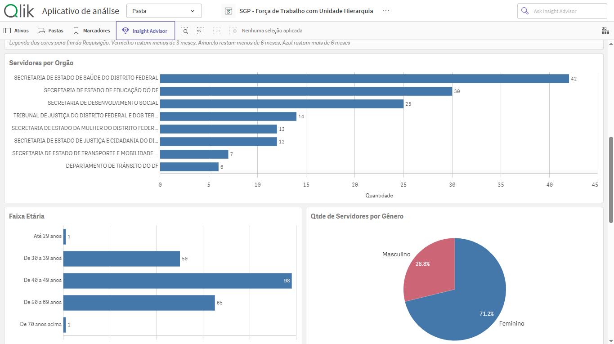
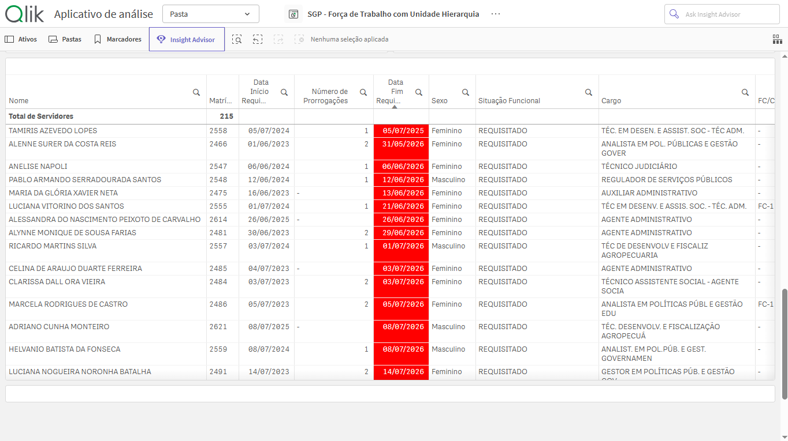
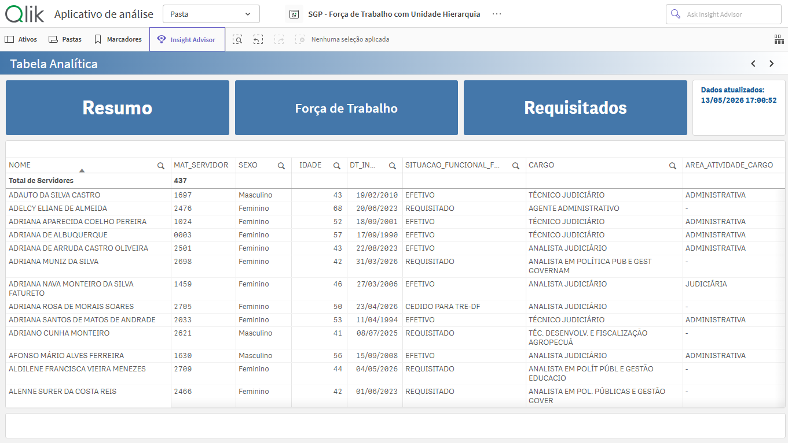

Painel analítico desenvolvido em Qlik Sense para acompanhamento da força de trabalho institucional, utilizando KPIs, filtros dinâmicos e visualizações interativas que permitem análise detalhada e segmentação estratégica das informações funcionais.
Dashboard Oficial
KPIs e gráficos comparativos desenvolvidos para análise da força de trabalho, contemplando situação funcional, cargos, FC/CJ e distribuição por gênero.

Estrutura analítica integrada com tabela detalhada e gráficos comparativos para acompanhamento e análise das informações gerais dos servidores atualmente.

Treemap interativo voltado à análise da distribuição funcional dos servidores entre as unidades institucionais.

Painel de monitoramento das requisições funcionais, composto por KPIs estratégicos e gráficos temporais com classificação visual de criticidade baseada na proximidade do vencimento das requisições.

Dashboard desenvolvido para análise demográfica e institucional dos servidores, utilizando gráficos de barras para comparação entre órgãos e faixas etárias, além de gráfico de pizza para visualização da distribuição por gênero.

Tabela analítica com leve modificação na coluna de data fim da requisição com destaque visual por cores para identificação de criticidade, considerando o prazo restante para encerramento das requisições.

Tabela analítica interativa voltada ao acompanhamento detalhado das informações dos servidores, possibilitando análise individualizada e suporte à tomada de decisão.